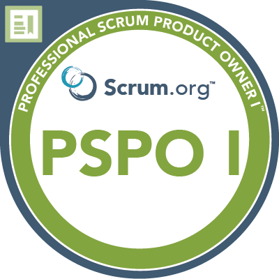
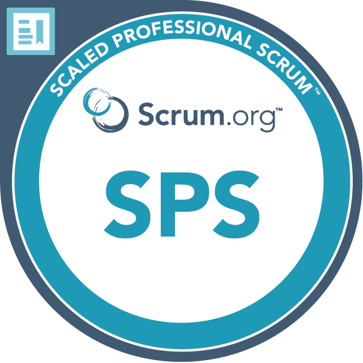
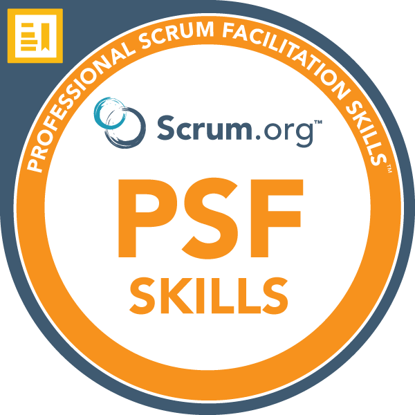
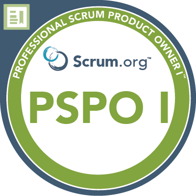
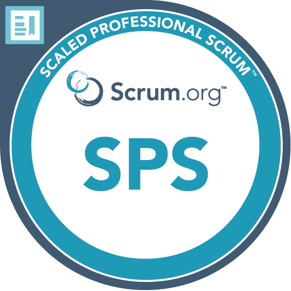
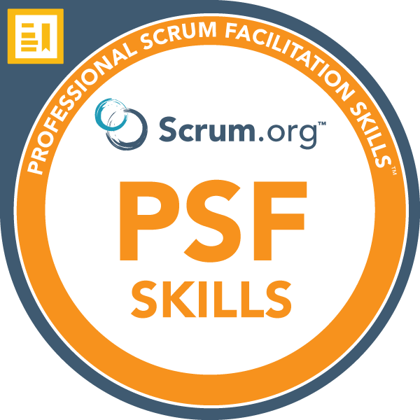

An enthusiastic Scrum Master with a strong Agile mindset and experience leading cross-functional teams to deliver successful projects.
Skilled in managing stakeholder relationships, optimizing processes, and driving continuous improvement to meet business goals.
Certified in Scrum (PSM II) and Kanban, with experience working with teams to ensure smooth project execution.
Facilitated several cross-functional teams through all stages of project delivery, focusing on value-driven outcomes and continuous improvement. Coached teams on self-organization, resulting in increased productivity and team cohesion.
Managed multiple projects simultaneously for diverse clients, ensuring timely delivery of high-quality solutions aligned with client objectives.
Applied Agile methodologies to streamline processes, promote adaptability, and improve stakeholder collaboration, leading to higher client satisfaction and efficient project execution in a fast-paced environment.
With Agile methodologies and mindset, I focused on optimising project workflows, improving team collaboration and ensuring the timely delivery of client campaigns.
By managing stakeholder expectations and facilitating continuous improvement, I help increase project efficiency and client satisfaction in an environment where being as fast as possible is key.
I mentor entrepreneurs in developing comprehensive strategies, focusing on marketing initiatives and business planning to drive sustainable growth.
I provide guidance on market positioning, brand development, and optimizing digital marketing efforts. .
Additionally, I help them refine their business models, identify key performance indicators, and create actionable plans to achieve their long-term goals.
I was responsible for building and maintaining strong relationships with our clients, ensuring they received the support needed to successfully implement our program.
I managed a portfolio of clients, tailored solutions to meet their unique needs, and provided ongoing guidance to enhance the program’s effectiveness.
By coordinating with internal teams and facilitating feedback loops, I ensured the consistent delivery of high-quality service while driving engagement and retention.
I helped to develop the sales department and also delivered the presentation of our software. In that time 10% of municipal services in Galicia became our clients.
I played a key role in building the team and establishing sales processes from the ground up.
By identifying target clients, optimizing lead generation, and managing key accounts, I contributed to significant increases in sales performance.
My efforts resulted in streamlined operations, improved team performance, and a solid foundation for future business expansion
Because I love teaching I have delivered training courses ad hoc for companies and organizations such as Cruz Roja or the Colegio de Aseguradoras, mainly (but not only) on coaching, sales and marketing. I eventually shared the stage with speakers such as Elsa Punset, Irene Villa and Mario Alonso Puig.
We accompanied two classes of pupils in the design of a joint entrepreneurship program, from the basic business idea to the strategy and its implementation.
We helped them build some basic competencies such as public speaking and sales, along with a genuine curiosity about the world around them, teamwork and learning.
It led them to collect almost 1000 kilos of food that were donated to the economic kitchen in La Coruña.
As a team coach, I supported the team to achieve their goals within the company and to handle their problems with more ease and clarity.
Working with the CEO I also contributed to the design and development of an incentive system and internal training programs.
Drawing on a non-directive approach rooted in the tradition of Sir John Whitmore, I help individuals to achieve their goals by helping them systematically recognize their resources and understand how to utilize them effectively.
Through active listening and insightful questioning, I create a supportive environment that encourages self-reflection and insight.
By guiding individuals in setting clear objectives and developing actionable plans, I facilitate their journey toward success, fostering greater confidence and accountability in the process.
I am gaining knowledge of software development practices to enhance my technical skills in managing the software development lifecycle and equip me with the tools to foster collaboration between development and operations teams, ultimately driving efficiency and innovation in project delivery.
This course focuses on HTML, CSS, Javascript, Node, React, PostgreSQL, Web3 and DApps.
I enrolled in this course to have a basic knowledge of software engineering and thus to understand better the needs and challenges of a software development team.
In this program, I deepened my understanding of Agile principles and methodologies.
The program was led and designed by PSM III Carlos López Cascallar and it focused on the role of the Scrum Master, but not only, as it included Product Ownership, Evidence-Based Management (EBM), Kanban, Objectives and Key Results (OKR), Management 3.0 and Agile Coaching.
I enhanced my skills in facilitating Agile transformations, coaching teams, and implementing best practices to drive efficiency and innovation in project delivery.
This led me to achieve several Scrum and Kanban certifications: PSM I, PSM II, PSPO I, SPS, PK I , PSK I and PSFS.
Completed a marketing program, where I gained an understanding of digital marketing strategies and techniques.
I learnt the basics of social media marketing focusing mainly on paid media strategies and SEM, content creation, and analytics.
Thanks to this, I can create effective marketing campaigns, drive online engagement, and measure performance metrics to optimize results.
To strengthen my coaching skills, I completed a mediation program with CEDECO in collaboration with Universidad Juan Carlos I, where I acquired essential skills in conflict resolution and negotiation.
Active listening, empathy, and effective communication techniques were some of the main principles I wanted to strengthen with this program and it enhanced my ability to facilitate dialogue, manage disputes, and promote collaborative solutions, preparing me to address conflicts in diverse settings.
I wanted to explore NLP so I completed a coaching course in Neuro-Linguistic Programming (NLP) with Joseph O'Connor, where I gained valuable insights into the principles of this popular coaching and communication methodology.
The course focused on techniques for building rapport, understanding behavioural patterns, and facilitating positive change using NLP.
It helped me to address issues such as limiting beliefs from a different perspective.
Completed a team coaching module with Frank Bresser, where I learned effective strategies for enhancing team dynamics and performance.
Completed a non-directive coaching training program under the guidance of coaching pioneers, including Sir John Whitmore, Tim Gallway, and Graham Alexander, as well as leading coaches such as Ben Renshaw, Hetty Einzig, Leo Ravier, and Alfonso Medina.
This 9-month program helped me build my coaching skills based on the principles of non-directive coaching, emphasizing active listening, self-awareness, and empowering individuals to uncover their solutions.
I did my first coaching sessions at FNAC and Cruz Roja.
My degree in Sociology provided a comprehensive understanding of social dynamics and cultural influences on human behaviour.
This helped me develop my critical thinking and research skills. I conducted qualitative and quantitative analyses of societal issues, gaining practical experience in data interpretation and application of sociological theories.
This background enhances my ability to understand diverse perspectives and contribute to community development and social change initiatives.